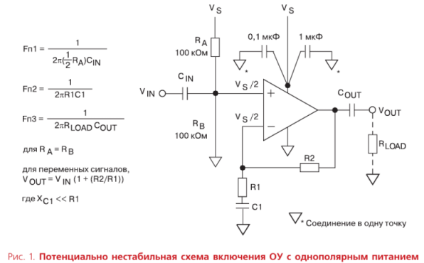
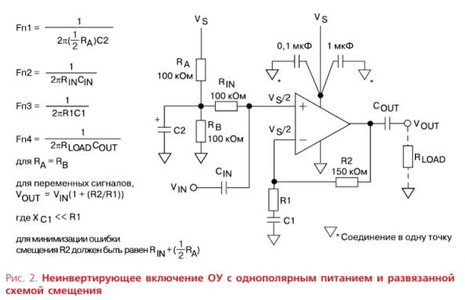
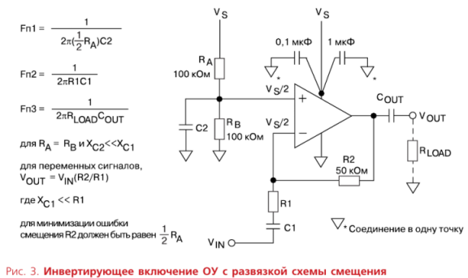
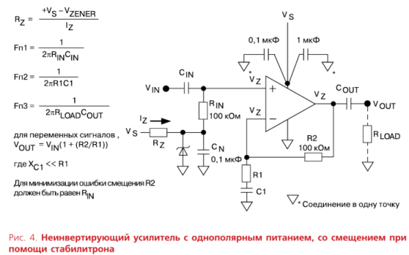
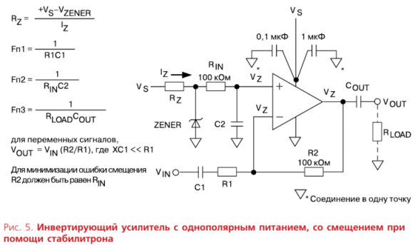
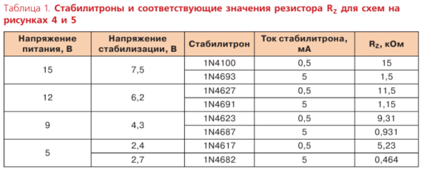
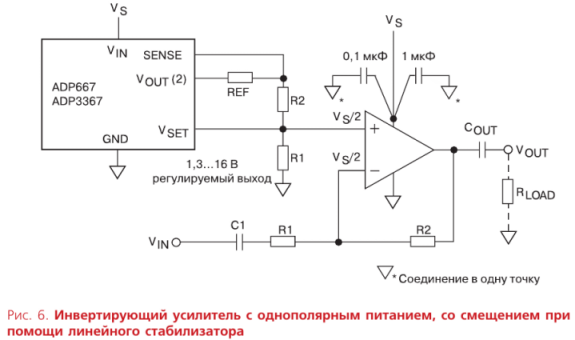

Чарльз Китчин, компания Analog Devices.
ОДНОПОЛЯРНОЕ ИЛИ ДВУПОЛЯРНОЕ ПИТАНИЕ?
Хотя симметричное двуполярное питание является оптимальным для операционных усилителей (ОУ), во многих случаях (жесткие требования к потреблению электроэнергии) необходимо или желательно использовать однополярное электропитание. Системы с однополярным электропитанием для обработки аналоговых сигналов имеют общие для таких решений дополнительные свойства, вызванные необходимостью использования компонентов для смещения аналогового сигнала на каждой стадии обработки. Если смещение аналогового сигнала не продумано, а тем более не выполнено, то возникает множество проблем, в том числе — нестабильность работы операционных усилителей.
ПРОБЛЕМЫ, ВОЗНИКАЮЩИЕ ПРИ СМЕЩЕНИИ С ПОМОЩЬЮ РЕЗИСТОРОВ
Применение ОУ с однополярным питанием связано с проблемами, которые обычно не встречаются при использовании двуполярного питания. Главная из них возникает тогда, когда входной сигнал является двуполярным относительно общего уровня («земли»). В системе с однополярным питанием этот уровень совпадает с уровнем отрицательного источника питания в традиционных решениях. Поэтому в этом случае нулевой уровень входного сигнала не может соответствовать «земле» и должен находиться между «землей» и уровнем питающего напряжения.
Основное преимущество систем с двуполярным питанием состоит в том, что их общее соединение («земля») является устойчивым, низкоомным нулевым уровнем для входного сигнала. При этом положительное и отрицательное напряжения питания могут быть несимметричными. При однополярном питании с помощью схем смещения создается уровень нулевого сигнала, обычно лежащий в середине диапазона питающего напряжения.
Чтобы использовать усилитель эффективно, то есть получить с его выхода максимальный сигнал без ограничения, входной сигнал должен быть смещен на середину выходного диапазона, или, что одно и то же, на уровень половины питающего напряжения. Наиболее эффективный способ — использование линейного стабилизатора, как показано на рисунке 6. Однако наиболее популярная схема смещения — резистивный делитель напряжения питания. Хотя этот способ наиболее прост, при его использовании возникает ряд проблем.
Используя рисунок 1, рассмотрим некоторые из них. На этом рисунке изображена классическая схема неинвертирующего усилителя переменного тока. Входной сигнал с помощью емкостной связи подается на вход усилителя. Средний уровень входного сигнала смещен на величину VS/2 с помощью резисторного делителя RA—RB. В полосе пропускания данный усилитель имеет коэффициент усиления КУ = 1 + R2/R1. Паразитное усиление постоянного сигнала сведено к единице с помощью емкостной обратной связи цепочкой R1C1, соединенной с нулевым уровнем («землей»). Поэтому уровень постоянной составляющей равен напряжению смещения. Этим самым мы избегаем возникновения искажений из-за усиления напряжения смещения. Обратная связь обеспечивает коэффициент усиления, равный 1 + R2/R1 для высокочастотных сигналов и равный единице — для постоянной составляющей и низкочастотных сигналов с частотами подавления f = 1/(2πR1C1) и f = 1/[2π(R1 + + R2)C1], а также вносит фазовый сдвиг во входную и выходную цепи.

Эта схема имеет серьезные ограничения применения. Во-первых, невозможно использовать такое важное свойство операционных усилителей, как подавление синфазного сигнала. Поскольку любое изменение питающего напряжения моментально отразится на напряжении смещения, равном VS/2, установлен ным резисторным делителем, любой шум, присутствующий в шине питания, будет усилен наряду с сигналом (за исключением самых низких частот). Так, при КУ = 100 пульсации напряжением 20 мВ от электросети могут быть усилены до напряжения более 1 В (в зависимости от параметров компонентов схемы).
Еще хуже, что при мощной нагрузке усилитель становится нестабильным в работе. Плохие стабилизация и фильтрация в источнике питания приводят к тому, что на шинах питания появляется значительный уровень сигнала. При работе усилителя, включенного по неинвертирующей схеме, этот сигнал поступает на вход усилителя через схему смещения, как было рассмотрено ранее, и усилитель самовозбуждается.
Оптимизация расположения компонентов на печатной плате, установка большого количества блокирующих конденсаторов, правильная разводка заземляющих шин и соединение их в одной точке, соответствующее проектирование шин питания уменьшают наводки и повышают стабильность схемы, но не исключают рассмотренных проблем. Поэтому далее будет предложено несколько решений, помогающих избежать трудностей в использовании усилителей при включении по схеме с однополярным электро питанием.
РАЗВЯЗКА СХЕМЫ СМЕЩЕНИЯ
Чтобы снизить влияние нестабильности напряжения питания, можно зашунтировать схему смещения по переменному току и добавить отдельный резистор для входного сигнала, как показано на рисунке 2. Конденсатор C2 обеспечивает фильтрацию пульсаций шины питания, тем самым восстанавливая способность ОУ ослаблять синфазные сигналы и влияние напряжения питания. Резистор RIN, который заменяет в этой схеме входное сопротивление RA/2 для сигналов переменного тока, обеспечивает передачу постоянного смещения на неинвертирующий вход усилителя.

Сопротивления резисторов RA и RB должно быть минимальными, насколько это позволяют ограничения по энергопотреблению. В данном случае выбрано значение 100 кОм, чтобы уменьшить потребляемый ток в схемах с батарейным питанием. Выбор величины шунтирующего конденсатора также требует внимания. С делителем напряжения RA/RB (100 кОм/100 кОм) и С2 = 0,1 мкФ частота среза по уровню –3 дБ фильтра высоких частот (ФВЧ), образованного параллельно соединенными резисторами RA и RB и конденсатором С2, равна 1/[2π(RA/2)C2] = 32 Гц. Хотя это усовершенствование схемы, приведенной на рисунке 1, позволило подавить синфазные помехи с часто тами выше 32 Гц, более низкочастотные сигналы сохранили обратную связь по шине питания усилителя. Поэтому при реализации такой схемы необходимо использовать конденсаторы большой емкости.
На практике емкость конденсатора C2 требуется увеличить до таких значений, при которых резисторный делитель схемы смещения эффективно шунтировался бы для всех частот в полосе пропускания усилителя. Хорошим правилом для расчета частоты среза ФВЧ, образованного RA, RB и C2, является выбор значения, равного 1/10 от наименьшего из значений частот среза RC-цепочек RIN CIN и R1C1.
Коэффициент усиления по постоянному току остается равным единице. Даже в этом случае должны учитываться входные токи. RIN с последовательно соединенным делителем напряжения RA/RB значительно повышают входное сопротивление на неинвертирующем входе операционного усилителя. Поддержание смещения выходного сигнала на уровне половины напряжения питания при использовании обычных усилителей
с обратной связью по напряжению, которые имеют симметричные сбалансированные входы, достигается правильным выбором величины резистора обратной связи R2.
В зависимости от напряжения питания значения резисторов, которые обеспечивают разумный компромисс между увеличением тока потребления или увеличением зависимости параметров усилителя от изменений входного тока, должны быть порядка 100 кОм для питающего напряжения 12ѕ15 В, снижены до 42 кОм для питания 5 В и до 27 кОм — для 3,3 В.
В высокочастотных усилителях (особенно с обратной связью по току) следует использовать низкоомный делитель и резистор обратной связи, для того чтобы сохранить широкую полосу пропускания при наличии паразитной емкости. Для операционных усилителей, таких как AD811, разработанных для обработки видеосигналов, оптимально подходит значение резистора R2, равное около 1 кОм. Поэтому схемы с такими ОУ требуют использования намного меньших значений резисторов RA и RB в делителе напряжения (и большую емкость шунтирующего конденсатора C2).
Из-за малого входного тока необходимость согласования резисторов на входах современных усилителей с полевыми транзисторами во входных каскадах не так важна, если усилитель не будет работать в широком температурном диапазоне. Иначе такое согласование необходимо.
Схема на рисунке 3 показывает, как реализуется смещение и шунтирование цепи смещения для инвертирующего усилителя.

Смещение с помощью резисторного делителя дешево и обеспечивает пос тоянный средний уровень выходного сигнала, равный половине величины напряжения питания, но подавление синфазного сигнала операционным усилителем зависит от постоянной времени RC-цепочки, образованной делителем RA/RB и конденсатором C2. Необходимо использовать в качестве С2 конденсатор такой емкости, которая обеспечивает по крайней мере в 10 раз большее значение постоянной времени RC-цепи RA/RB – C2, чем у RINCIN и R1C1. Это гарантирует достаточное подавление синфазного сигнала. С резисторами RA и RB, равными 100 кОм, величина конденсатора C2 может оставаться довольно небольшой, если не требуется работа усилителя на очень низких частотах.
СМЕЩЕНИЕ ПРИ ПОМОЩИ СТАБИЛИТРОНА
Более эффективный способ обеспечить необходимое смещение при однополярном питании — это использование стабилитрона, как показано на рисунке 4. В этой схеме резистор RZ обеспечивает необходимый рабочий ток стабилитрона. Конденсатор CN шунтирует вход операционного усилителя от шума стабилитрона.

Стабилитрон должен иметь напряжение стабилизации, близкое к половине напряжения питания. Резистор RZ должен обеспечивать достаточно большой ток, позволяющий стабилитрону работать в устойчивом режиме и, тем самым, обеспечивать минимальную погрешность стабилизации. С другой стороны, важно минимизировать энергопотребление (и тепловые потери). Поскольку входной ток операционного усилителя незначителен, то
наиболее оптимален выбор стабилитрона малой мощности. Стабилитрон мощностью 250 мВт является оптимальным, но и наиболее распространенные 500-мВт стабилитроны также приемлемы. Оптимальный рабочий
ток — около 0,5 мА для 250-мВт и около 5 мА — для 500-мВт стабилитронов.
Схема на рисунке 4 обеспечивает низкоомный опорный уровень и устраняет влияние нестабильности питающего напряжения на вход усилителя. Преимущества существенны, но стоимость и энергопотребление увеличиваются, да и средний уровень напряжения на выходе усилителя будет соответствовать выходному напряжению стабилитрона и может отличаться от VS/2. Если это отличие окажется существенным, то при боль-
ших выходных сигналах будет происходить асимметричное ограничение. Входные токи смещения также должны быть согласованы. Резисторы RIN и R2 должны быть равными, чтобы при прохождении через них входного тока разница падения напряжения на них не приводила к появлению ошибки смещения.
Рисунок 5 показывает схему инвертирующего усилителя со смещением уровня входного сигнала стабилитроном.

В таблице 1 перечислены стабилитроны нескольких типов, которые могут быть выбраны в зависимости от напряжения питания для обеспе чения необходимого смещения. Значение RZ в таблице выбрано исходя из обеспечения стабилитронов током 5 или 0,5 мА для схем, показанных на рисунках 4 и 5. Для уменьшения шума (ошибки стабилизации) может быть выбран и больший ток; его максимальную величину следует выяснить в техническом описании стабилитрона.

СМЕЩЕНИЕ С ПОМОЩЬЮ ЛИНЕЙНОГО СТАБИЛИЗАТОРА
Для операционных усилителей с однополярным питанием 3,3 В требуется смещение напряжения 1,65 В. Однако напряжение стабилизации выпускаемых стабилитронов — не ниже 2,4 В. Хотя существуют источники опорного напряжения AD589 и AD1580 с напряжением 1,225 В, которые могут использоваться подобно стабилитронам, но они не обеспечивают смещение на половину напряжения питания. Самый простой способ
обеспечить смещение входного сигнала на произвольную величину — это использовать линейный стабилизатор напряжения, например ADP667 или ADP3367, как показано на рисунке 6.

Выходное напряжение линейного стабилизатора может быть установлено в пределах от 1,3 В до 16 В, и это обеспечит низкоомное смещение для операционного усилителя с однополярным напряжением питания от 2,6 В до 16,5 В.
СВЯЗЬ ПО ПОСТОЯННОМУ ТОКУ ПРИ ОДНОПОЛЯРНОМ ПИТАНИИ
Пока была обсуждена только связь операционного усилителя по переменному току. Хотя при использовании входных и выходных конденсаторов связи большой емкости усилитель может работать с сигналами с частотами значительно ниже 1 Гц, в некоторых случаях требуется истинная связь по постоянному току. Схемные решения, которые обеспечивают низкоомное постоянное напряжение смещения, типа стабилитронов
и линейных стабилизаторов, обсуждаемых выше, могут использоваться, чтобы создавать напряжение «среднего уровня».
Альтернативно схеме смещения, построенной на резистивном делителе, показанной на рисунках 1 и 3, для создания низкоомной искусственной «земли» может использоваться буферный операционный усилитель, как показано на рисунке 7. Если для питания используется низковольтная батарея, скажем 3,3 В, ОУ должен иметь возможность работать с сигналами, равными размаху напряжения питания — rail-to-rail. Кроме того,
ОУ также должен быть способен обеспечить большой положительный или отрицательный выходной ток. Конденсатор C2 шунтирует делитель напряжения, чтобы уменьшить шумы резисторов. На эту схему не влияет нестабильность электропитания, потому что общий уровень («земля») всегда находится на уровне половины напряжения питания.
ПРОБЛЕМЫ ЗАДЕРЖКИ ВКЛЮЧЕНИЯ
В заключение необходимо рассмотреть еще одну проблему — время включения усилителя. Оно приблизительно будет зависеть от постоянной времени RC-цепочки, используемой в самом низкочастотном фильтре.
В пассивных схемах смещения, рассмотренных здесь, требуется, чтобы постоянная времени RC-цепочки, состоящей из параллельно соединенных резисторов RA и RB и С2, была в 10 раз больше, чем постоянные времени входной и выходной цепей. Длительная постоянная времени помогает удерживать схему смещения во «включающемся» состоянии по отношению к входным и выходным цепям усилителя, обеспечивая постепенное нарастание среднего уровня выходного сигнала от 0 В до половины напряжения питания без скачков до уровня напряжения питания. Главное требование, чтобы частота среза схемы смещения на уровне 3 дБ была меньше в десять раз, чем наименьшая из частот среза R1C1 и RLOAD/COUT. Например, в схеме на рисунке 2 для полосы пропускания начиная с 10 Гц и коэффициента усиления, равного 10, емкость конденсатора C2 должна быть равна 3 мкФ, что обеспечит частоту среза по уровню 3 дБ, равную 1 Гц.
С резисторами RA и RB = 100 кОм сопротивление в RC-цепочке (параллельное соединение) будет равно 50 кОм, и при C2 = 3 мкФ постоянная времени будет равна 0,15 с. Таким образом, средний уровень выходного сигнала усилителя достигнет величины половины напряжения питания приблизительно за 0,2ѕ0,3 с. Между тем, входные и выходные RC-цепи установятся в десять раз быстрее.
В устройствах, где время включения может оказаться чрезмерно длительным, предпочтительнее использовать схемы смещения на стабилитронах или линейных стабилизаторах.